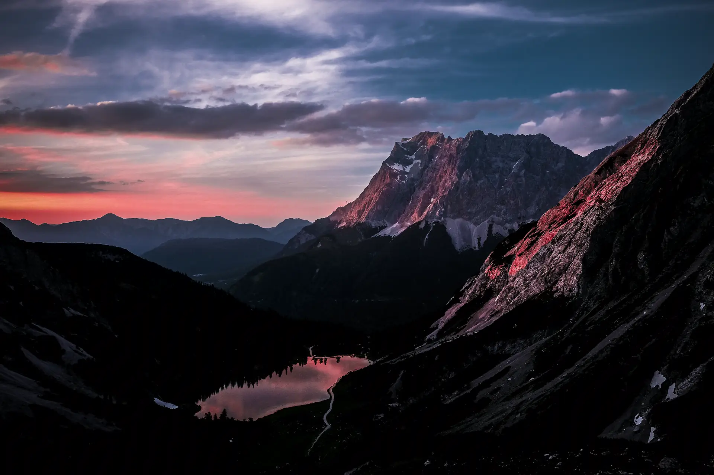
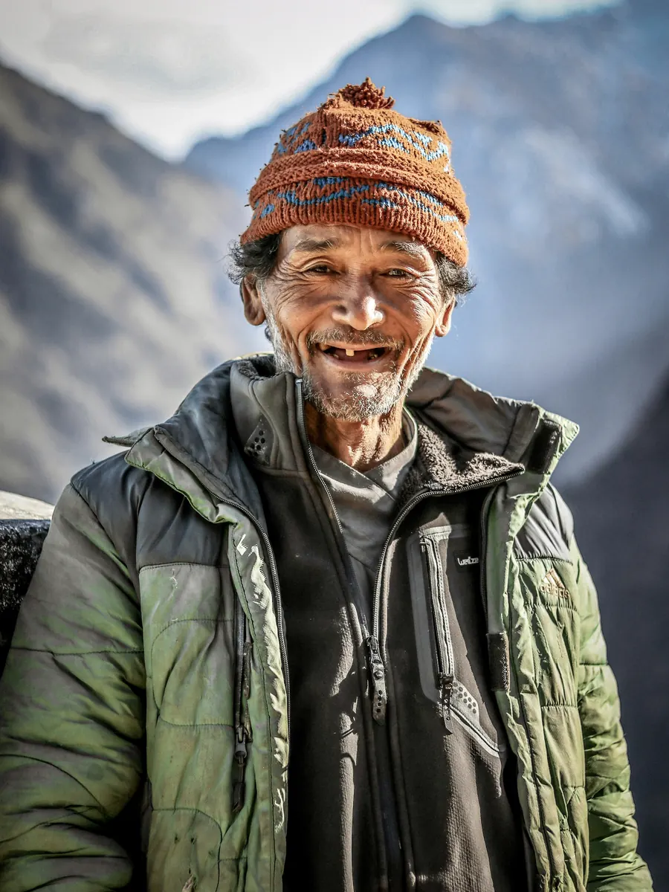
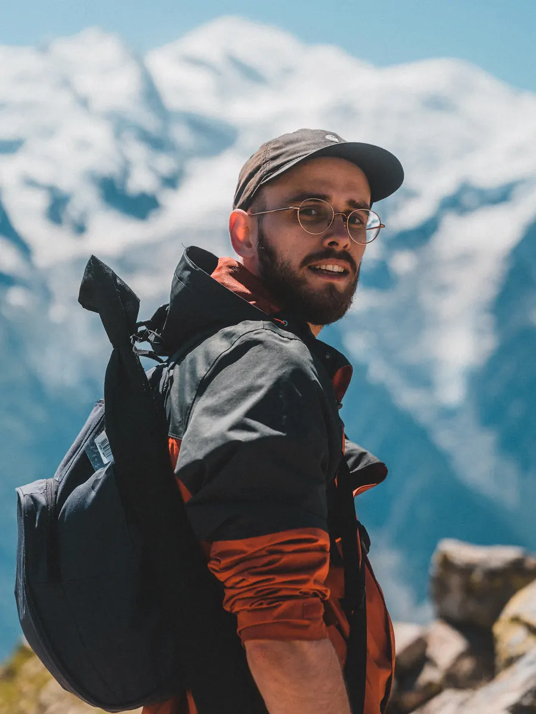
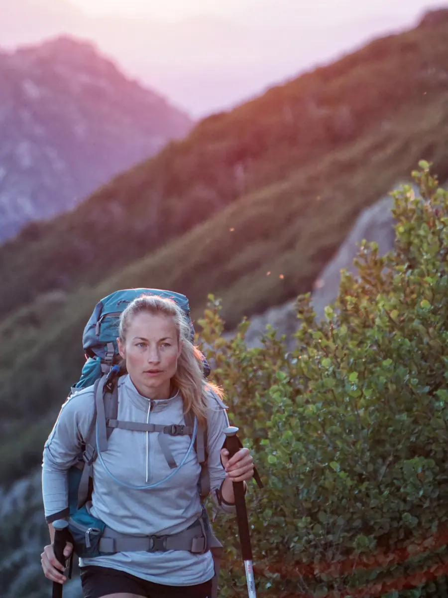

Two founders, five guides, one rule.
Walk when the light is good and rest when it isn't. Everything else about how we work follows from that.
A missed sunrise on the Lofoten crossing, 2018.
We were both guiding for other people then, on routes timed to the bus. One morning in Lofoten the group reached Hermannsdalstinden at ten, in flat light, having walked past the best hour of the year with their heads down because the day's distance said so. That evening we worked out what it would take to run the same route the other way round: short days, long stops, up in the dark. The answer was fewer people and more guides, which is a bad business and a good expedition.
Longlight registered in Tromsø in February 2019 with one route and eleven walkers that first summer. In 2026 there are six routes, 31 departures, and still only eight places on each. We have turned down a ninth place 140-odd times since then and expect to keep doing it.
The company is owned by the two of us and the guides. Nobody outside it has a say in how slow we go.
Two on every departure.
Each of our five guides leads at most two routes and has walked each of them at least six times before leading it. Three of them, as they are most mornings:



Six things we will not change.
- Eight walkers. Not nine. The group fits around one table and inside one conversation.
- Two guides, from the first hour to the last. One picks the line. One is in no hurry.
- No day over nine hours or nine hundred metres of ascent, and most are nearer five and five.
- No helicopters, no shuttles up the route. If a day is too long to walk at our pace, the route is wrong, not the pace.
- Real places, named truthfully. Every altitude and distance on this site is the hut's or the map's, and we would rather tell you 120 km than round it to a nicer number.
- We cancel for weather, not for numbers. A departure with five walkers runs. A departure with eight walkers and a forecast of 90 km/h on the Lagazuoi terrace does not.
“We are not slow because we are unfit. We are slow because the pass at 05:40 and the pass at noon are two different places, and only one of them is worth the walk.”